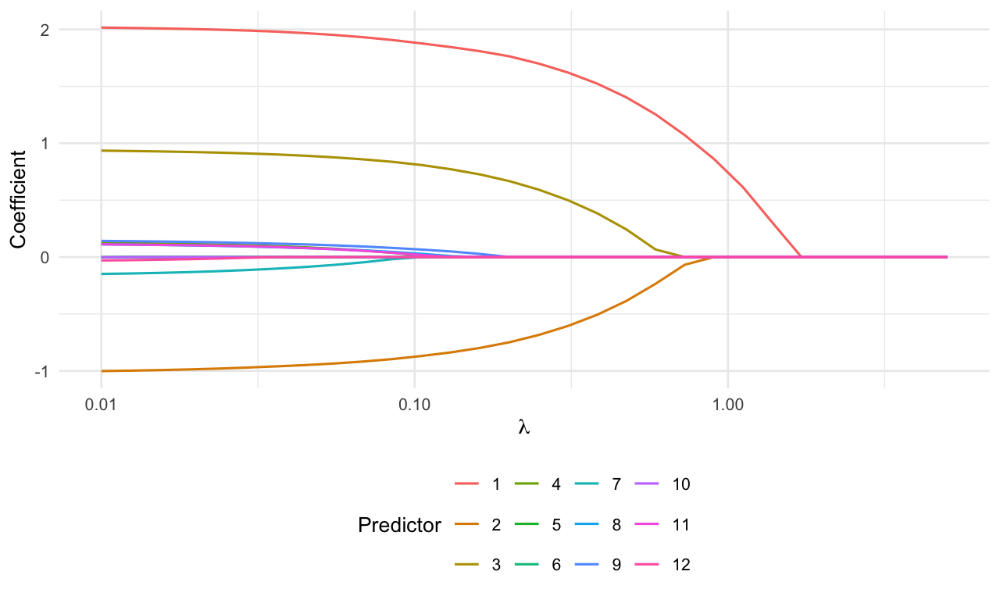
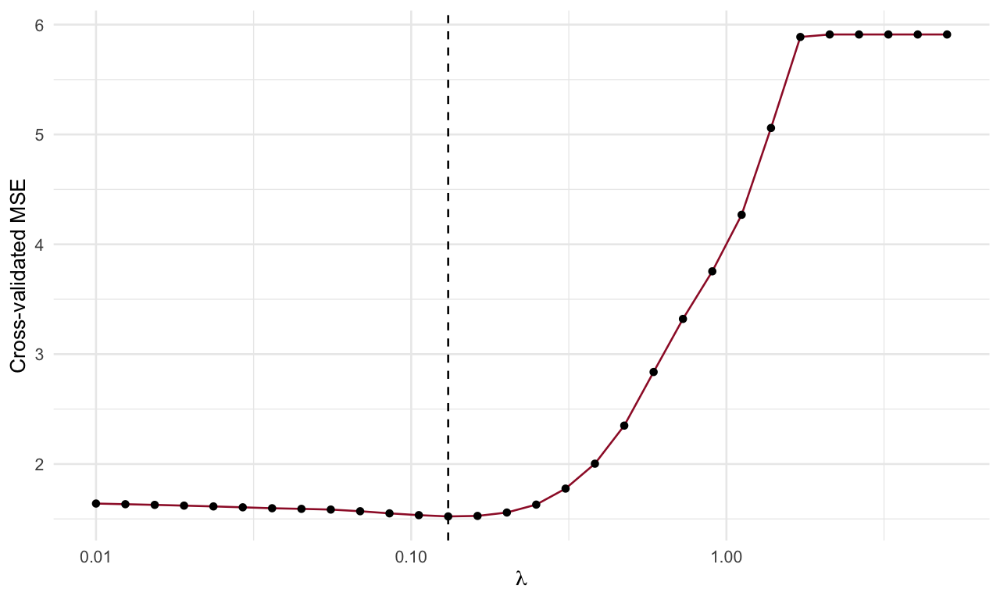
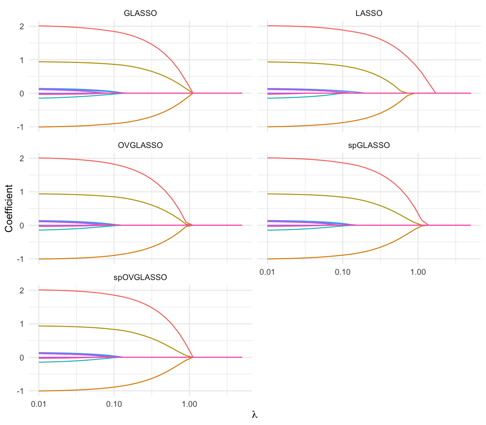
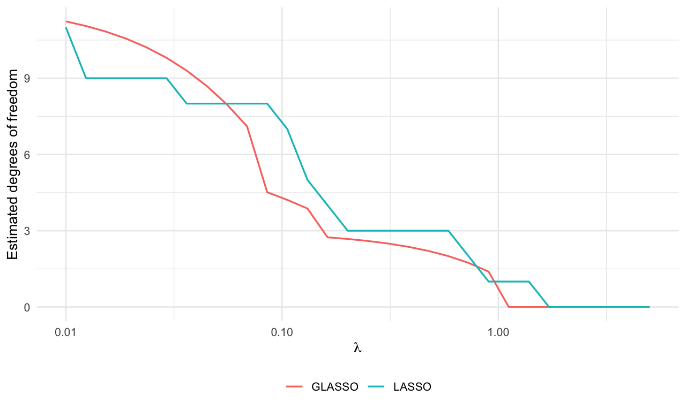

Linear regression and regularization paths
1 Prepare the session
Run the examples in chapter order, or use the downloadable R script. These helpers define solver tolerances, reshape path matrices for plotting, and check convergence. Subsequent chapters reuse them.
library(fdaSP)
library(ggplot2)
theme_set(theme_minimal(base_size=12)+theme(legend.position="bottom"))
ctl <- list(maxit=3000, abstol=1e-6, reltol=1e-6, print.out=FALSE)
path_data <- function(path, lambda) {
path <- as.matrix(path)
stopifnot(nrow(path)==length(lambda))
data.frame(lambda=rep(lambda,ncol(path)), coefficient=as.vector(path),
term=factor(rep(seq_len(ncol(path)),each=nrow(path))))
}
check_path <- function(fit) {
stopifnot(all(is.finite(fit$sp.coef.path)), all(fit$convergence==1))
}2 Start with a sparse signal
lmSP() fits a path; lmSP_cv() selects a tuning parameter by cross-validation. The same interface covers Lasso, Group Lasso, sparse Group Lasso and their overlapping-group counterparts. We begin with 12 predictors and three nonzero coefficients, so that the fitted path can be compared with a known signal.
set.seed(101)
n <- 100
p <- 12
X <- matrix(rnorm(n*p), n, p)
beta <- c(2,-1,1,rep(0,p-3))
y <- drop(X %*% beta) + rnorm(n)
lambda <- 10^seq(0.7,-2,length.out=30)
control <- ctlThe grid is decreasing and equally spaced on a logarithmic scale. We set standardize.data=FALSE explicitly: the simulated predictors already have comparable scales, and predictions below then use the original design directly. On real data, learn centering and scaling from the training sample and reuse them for validation and prediction. An unpenalized intercept can be requested with intercept=TRUE; other unpenalized covariates can be supplied through Z.
fit <- lmSP(X=X, y=y, penalty="LASSO", lambda=lambda,
standardize.data=FALSE, intercept=FALSE, control=control)
check_path(fit)
dim(fit$sp.coef.path)## [1] 30 12Each row of sp.coef.path corresponds to a value of lambda; each column corresponds to a predictor. This orientation matters when calculating predictions.
ggplot(path_data(fit$sp.coef.path,fit$lambda),
aes(lambda,coefficient,colour=term)) + geom_line(linewidth=.65) +
scale_x_log10() + labs(x=expression(lambda),y="Coefficient",colour="Predictor")
Lasso coefficient paths. The horizontal axis is logarithmic; each line is one predictor.
3 Select a model and predict
The path object’s lambda.min minimizes training MSE. It is not the cross-validation choice. Use the CV result to select a row of the path, or refit at the selected value. The example splits observations into folds, appropriate for independent sampling; time-series examples need a different split.
set.seed(102)
cv <- lmSP_cv(X=X, y=y, penalty="LASSO", lambda=fit$lambda,
cv.fold=5, standardize.data=FALSE, control=control)
i_cv <- which.min(abs(fit$lambda-cv$lambda.min))
beta_cv <- as.numeric(fit$sp.coef.path[i_cv,])
Xnew <- matrix(rnorm(40*p),40,p)
ynew <- drop(Xnew %*% beta) + rnorm(40)
pred <- drop(Xnew %*% beta_cv)
data.frame(lambda=cv$lambda.min, test_MSE=mean((ynew-pred)^2))## lambda test_MSE
## 1 0.130991 1.042146ggplot(data.frame(lambda=cv$lambda,mse=as.numeric(cv$mse)),aes(lambda,mse)) +
geom_line(colour="#9e1b32") + geom_point(size=1.5) +
geom_vline(xintercept=cv$lambda.min,linetype=2) + scale_x_log10() +
labs(x=expression(lambda),y="Cross-validated MSE")
Cross-validated prediction error and the selected tuning parameter.
4 Compare the five penalty families
Disjoint groups are encoded by a membership vector. For overlapping groups, use a list whose groups element concatenates the member indices and whose Glen element records the length of each group. A predictor may appear more than once in the concatenated vector.
groups <- rep(1:4,each=3)
overlap <- list(groups=c(1:4,4:7,7:10,10:12),Glen=c(4,4,4,3))
family_args <- list(
LASSO=list(),
GLASSO=list(groups=groups),
spGLASSO=list(groups=groups,alpha=.5),
OVGLASSO=list(groups=overlap),
spOVGLASSO=list(groups=overlap,alpha=.5))
fits <- lapply(names(family_args),function(method) {
do.call(lmSP,c(list(X=X,y=y,penalty=method,lambda=lambda,
standardize.data=FALSE,control=control),family_args[[method]]))
})
names(fits) <- names(family_args)
invisible(lapply(fits,check_path))
paths <- do.call(rbind,lapply(names(fits),function(method) {
d <- path_data(fits[[method]]$sp.coef.path,fits[[method]]$lambda)
d$method <- method
d
}))ggplot(paths,aes(lambda,coefficient,group=term,colour=term)) +
geom_line(linewidth=.55) + scale_x_log10() + facet_wrap(~method,ncol=2) +
labs(x=expression(lambda),y="Coefficient") + theme(legend.position="none")
Coefficient paths under five penalties, using the same response and tuning grid. Equal numerical tuning parameters do not imply equal penalty strength across methods.
Group Lasso selects groups, whereas sparse Group Lasso also allows within-group sparsity (Yuan and Lin 2006; Simon et al. 2013). Overlapping groups express shared structure; the penalty acts on repeated group memberships rather than on a partition (Jenatton, Audibert, and Bach 2011).
5 Adaptive penalties
For Lasso, adaptive=TRUE requests the package’s adaptive scheme. For group penalties, the example below supplies explicit pilot-based group weights. These are distinct from var_weights, which act on individual coefficients. In the supplied version, the lmSP() group branches do not forward weights_adaptive to their solvers, so explicit weights make the intended penalty unambiguous.
adaptive_lasso <- lmSP(X=X,y=y,penalty="LASSO",adaptive=TRUE,
lambda=lambda,standardize.data=FALSE,control=control)## Warning in linreg_ADMM_LASSO(X = X, Z = Z, y = y, var_weights = var_weights, : * lmSP : adaptive Lasso is running!pilot <- drop(qr.solve(X,y))
pilot_norms <- vapply(split(pilot,groups),function(b) sqrt(sum(b^2)),numeric(1))
group_weights <- 1/pmax(pilot_norms,1e-4)
adaptive_group <- lmSP(X=X,y=y,penalty="GLASSO",groups=groups,
group_weights=group_weights,lambda=lambda,
standardize.data=FALSE,control=control)
check_path(adaptive_lasso)
check_path(adaptive_group)The floor 1e-4 is an explicit numerical choice for this example, not an identity for inverse weights at zero. Pilot weights are data dependent (Zou 2006). When evaluating an adaptive procedure by CV, recompute its pilot and weights inside each training fold; supplying full-sample weights to an ordinary CV call does not do this automatically.
6 Inspect degrees of freedom along the path
The tested version returns dof and bic for Lasso and Group Lasso. The sparse-group and overlapping-group fits do not currently return these components. The plot includes only fits for which a DoF vector is actually returned; it does not replace missing values by a count of nonzero coefficients. For the explicit pilot-weighted Group Lasso example above, the group solver reports a fixed-weight contribution, not the full correction for data-dependent weights.
dof_methods <- names(fits)[vapply(fits,function(z) !is.null(z$dof),logical(1))]
df_paths <- do.call(rbind,lapply(dof_methods,function(method) {
z <- fits[[method]]
stopifnot(length(z$dof)==length(z$lambda))
data.frame(lambda=z$lambda,dof=as.numeric(z$dof),method=method)
}))
ggplot(df_paths,aes(lambda,dof,colour=method)) + geom_line(linewidth=.7) +
scale_x_log10() + labs(x=expression(lambda),y="Estimated degrees of freedom",colour=NULL)
Degrees-of-freedom estimates returned by fdaSP along the available fitted paths.